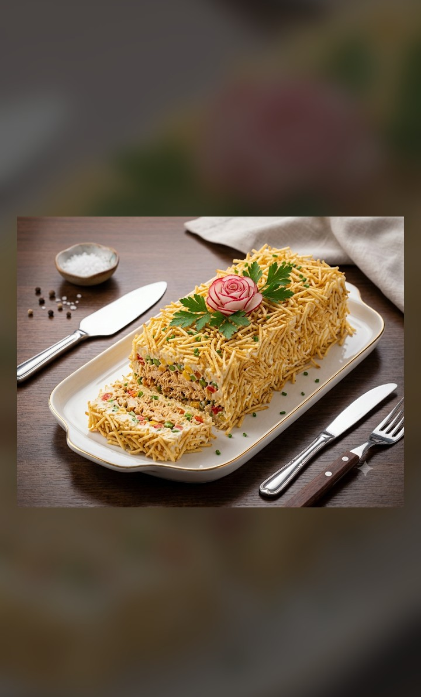

Bolo de Coco
Massa macia e úmida, com sabor de coco bem presente e finalização cremosa. Ideal para café da tarde e comemorações.
Consulte pelo WhatsApp
Bolos, doces e salgados feitos com carinho, ingredientes selecionados e aquele toque caseiro que abraça.
Trabalhamos com bolos, doces e salgados artesanais preparados com ingredientes selecionados e muito carinho.


Aniversários, casamentos, cafés e eventos: montamos kits e quantidades sob medida para o seu momento.
Faça sua encomenda personalizada pelo WhatsApp.
Massa macia e úmida, com sabor de coco bem presente e finalização cremosa. Ideal para café da tarde e comemorações.
Consulte pelo WhatsApp
Sabor de roça: bolo de milho bem fofinho com pedaços de goiabada derretendo. Combina demais com café fresquinho.
Consulte pelo WhatsApp
Duas opções irresistíveis: chocolate intenso e aconchegante ou laranja perfumada e leve. Perfeito para qualquer ocasião.
Consulte pelo WhatsApp
Recheio de maçãs com sabor caseiro e textura equilibrada, perfeita para servir gelada ou levemente aquecida.
Consulte pelo WhatsApp
Cremosa e refrescante, com aquele azedinho na medida e finalização suave. Uma das favoritas para dias quentes.
Consulte pelo WhatsApp
Clássico elegante: cremosidade da baba de moça com o crocante e o sabor marcante das nozes. Perfeita para datas especiais.
Consulte pelo WhatsApp
Chocolate cremoso e intenso, com textura aveludada. A escolha certa para quem ama sobremesa bem chocolatuda.
Consulte pelo WhatsApp
Leve, delicada e irresistível: creme suave com morangos selecionados, perfeita para encantar na sobremesa.
Consulte pelo WhatsApp
Cremoso e bem lisinho, com sabor de milho que lembra festa junina o ano inteiro. Doce na medida certa.
Consulte pelo WhatsApp
Perfeito para matar a vontade: massa fofinha e saborosa, com aquele gostinho de bolo feito em casa.
Consulte pelo WhatsApp
Perfeitos para festas e lembrancinhas: variedade de sabores, acabamento caprichado e aquele sabor que dá vontade de repetir.
Consulte pelo WhatsApp
Massa leve e bem temperada, recheio generoso e ótimo rendimento. Ideal para reuniões, lanches e eventos.
Consulte pelo WhatsApp
Assados ou fritos, sempre sequinhos e saborosos. Ideal para aniversários, eventos ou aquele lanche especial.
Consulte pelo WhatsApp
Personalizado do seu jeito: massa fofinha, recheio equilibrado e decoração caprichada para o seu dia ficar inesquecível.
Consulte pelo WhatsApp
Massa delicada com recheio cremoso e aromático. Ótima para servir em fatias, do brunch ao lanche da tarde.
Consulte pelo WhatsApp